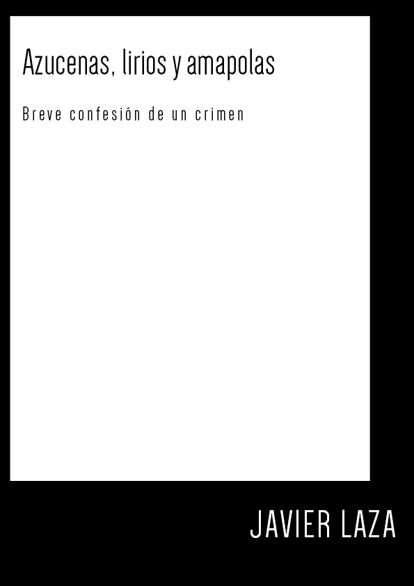

Ladrón de artes
Relato publicado en la revista literaria Pluma Fanzine.

Azucenas, lirios y amapolas
Un piscolabis mientras va llegando mi primer libro.
Este relato de diez páginas no aparece en la antología que publicaré, así que puedes descargártelo gratis y esperar al plato principal
con una lectura que ofrece risas, intriga, algo de poesía y un par de pistas acerca de mi estilo.
El plato principal sí lo cobro, porque gilipollas tampoco soy.